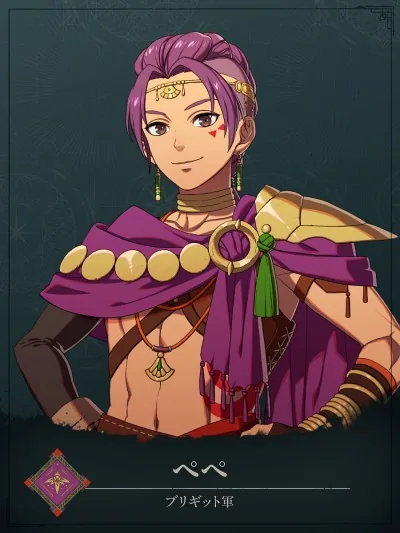

布里吉德軍
佩佩
ペペPeppe
以速度與優雅作戰的狩獵高手。自稱「朕」暴露了高貴出身，為了解韃古席翁的文化而來。
個人技能
獵人之罠Hunter's Snare
敵方回合中，若敵人已受傷，戰鬥中由自身先攻。發動率 30%。
- 擅長
- 弓術步兵術劍術

以速度與優雅作戰的狩獵高手。自稱「朕」暴露了高貴出身，為了解韃古席翁的文化而來。
敵方回合中，若敵人已受傷，戰鬥中由自身先攻。發動率 30%。